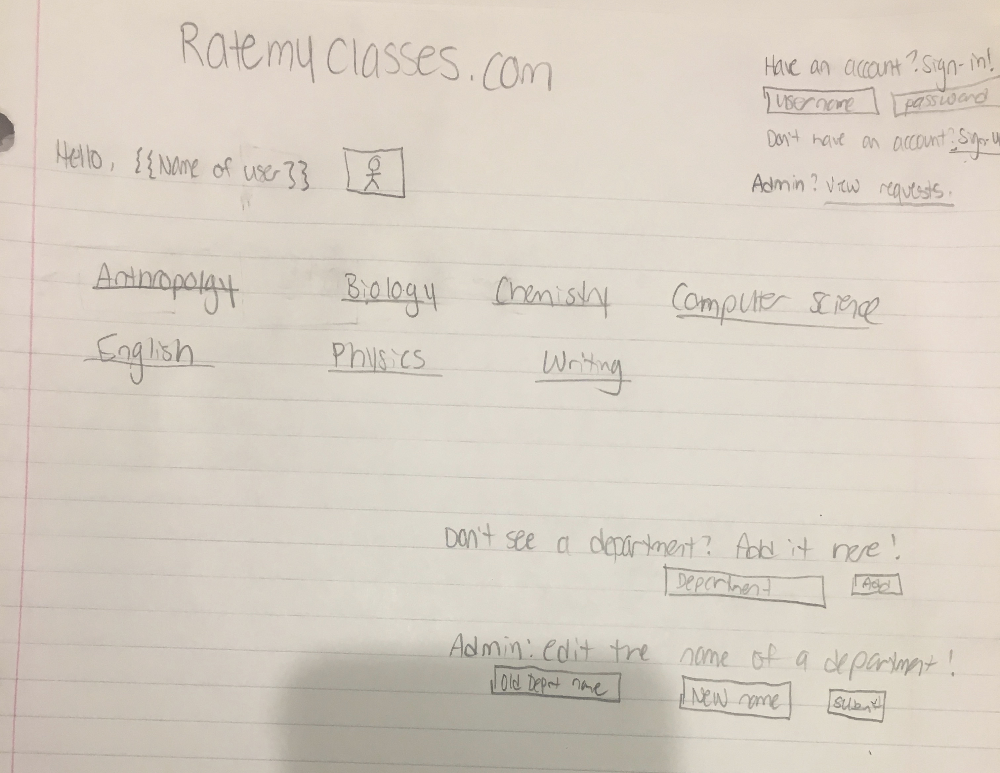
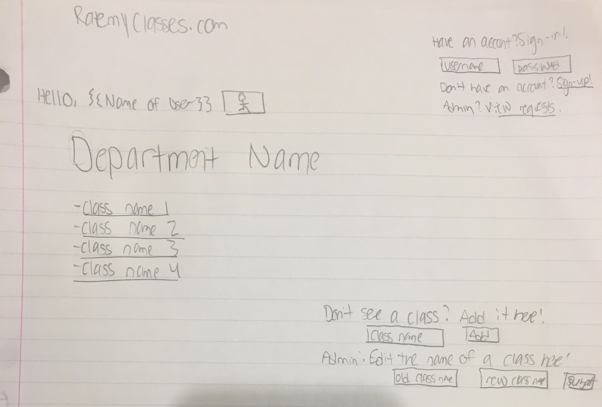
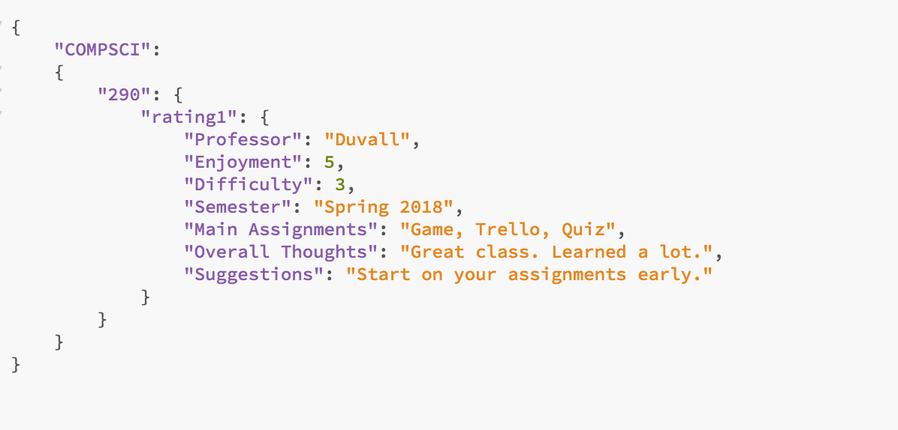
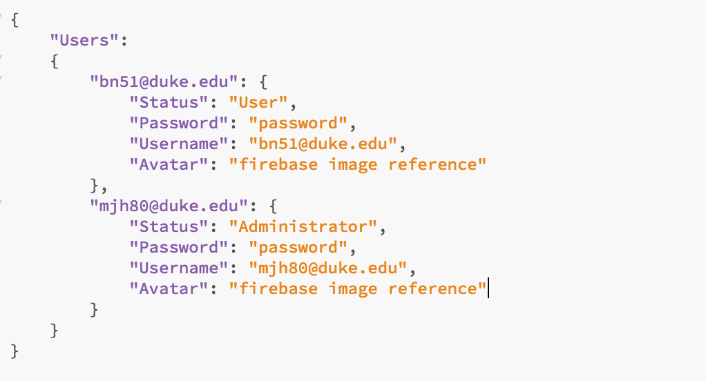

Mallory Hahn (mjh80) Belanie Nagiel (bn51) CS 290 Spring 2018 Professor Duvall
For our website, we plan on organizing our data into a database (Firebase). We’ll have a list of departments, then within each department have a list of classes, and then finally within each list of class have a sublist of the reviews. Likewise, we will use components to organize our application, namely one component will be for departments, one for class titles within that department, and one for a class. We will switch between the component using buttons, similar to how we did for the quiz assignment.
Regardless of which page you are on, a user or admin can sign in or out at any point. At the top of the page outside of the components, there will be the title of the website as well as a section where users/admin can login. For this portion, we would use firebase authentication to make sure that they are using an @duke.edu email. Anyone can create an account and become a user so long as they have a valid duke email, but an administrator has to request administrator status. From the homepage, an administrator can click a button to view all of the users who have requested administrator status, and can grant that to them by checking a box. Once logged in, the page will display your name and a chosen avatar. There will then be a sign out option where the login option was before. If you x-out of the page, you will automatically be signed out.
On the homepage, we will have all of the departments listed in alphabetical order. Each department will be displayed with a button, and clicking that button will take you to a page with all of the classes in that department. At the bottom of the page, users, once logged in, will see an input section where they can add a department that they don’t see. Admin will also have this option, but will also be able to edit names of departments and remove departments.
Once a department button is clicked, it will move to the next page: the class titles page. Here, every class will have a button that when pressed will take them to the reviews for that class. Users will have the option to add a new class, and admin can add a new class, remove a class, or edit the name of the class. All classes will sort classes by number.
After pressing a button to view a specific class, it will take you to a new page where the reviews for that class are all listed. Both users and admin will have a button available to them to add a new review. This would entail rating the overall enjoyment and difficulty of the class using radio buttons on a scale from 1-5, the professor name, the semester they took the class, the main assignments for the class, overall thoughts, and suggestions to future students. You can also either choose to be anonymous or have your username (your email) displayed. This would be represented on as a checkbox on the form to add a new class. All fields of the form would have to be filled out to submit a valid review. Users can then edit the reviews they’ve made, while admin can edit or delete any of the reviews. Likewise, users and admin can upvote and downvote reviews that they agree or found helpful. Once a review reaches ten downvotes, it will automatically be deleted. The reviews can be sorted by enjoyment score and difficulty score, or filtered by professor. To filter by the professor, a user would type in the Professor’s name, and any card containing that string in the “professor” field would be displayed. At the top of the page, the average enjoyment score and the average difficulty rating would be displayed.
Example JSON Files for the database:
 